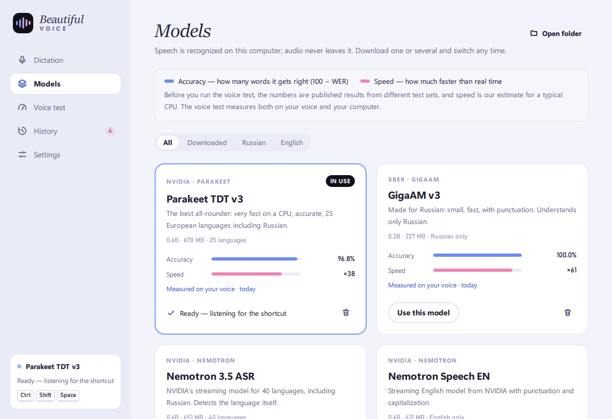
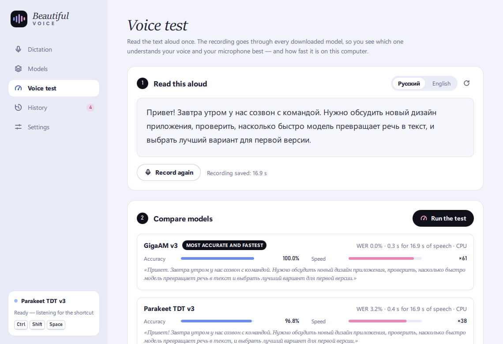

Speak. It types where you are.
Press a shortcut in any app, say what you mean, press it again — the text lands where your cursor is. Speech is recognized on your computer, never in the cloud.
Free and MIT-licensed · Windows 10 and 11 · the speech model (~650 MB) downloads on first start
Three keys, any app
Chats, email, your code editor, a browser form — if it has a text field, you can talk into it.
Press the shortcut
A small black pill appears at the bottom of the screen. Its bars follow your voice; a timer counts.
Speak naturally
Finished phrases are recognized while you're still talking, so nothing piles up at the end.
Press it again
The text is pasted into the field you were typing in — about half a second later on an ordinary CPU.
Pick a model, see how good it is
Every model shows two measures. The built-in voice test runs one recording of your voice through every downloaded model — so you see which one understands you best on your own computer.
Nemotron 3.5 ASR default
Parakeet TDT v3
GigaAM v3
Whisper Large v3 Turbo
Published English results from the Open ASR Leaderboard (GigaAM: Russian, its own evaluation). Also in the app: Canary 1B v2, Parakeet TDT v2, Nemotron Speech EN, Whisper Large v3, Distil-Whisper, Whisper Small and Base.


Private by design
Recognition runs on your computer. Audio is never saved or sent anywhere; only the text goes into your history.
Stays out of the way
Lives in the tray, can start with Windows, gives your clipboard back after pasting, keeps dictation out of clipboard history.
Yours to change
Hold-to-talk or press twice, your own shortcut, microphone and history limit. MIT-licensed — fork it, improve it.
The interface speaks nine languages
Give your hands a break.
Unzip anywhere and run BeautifulVoice.exe. Windows may warn about an unsigned app — choose “More info → Run anyway”.